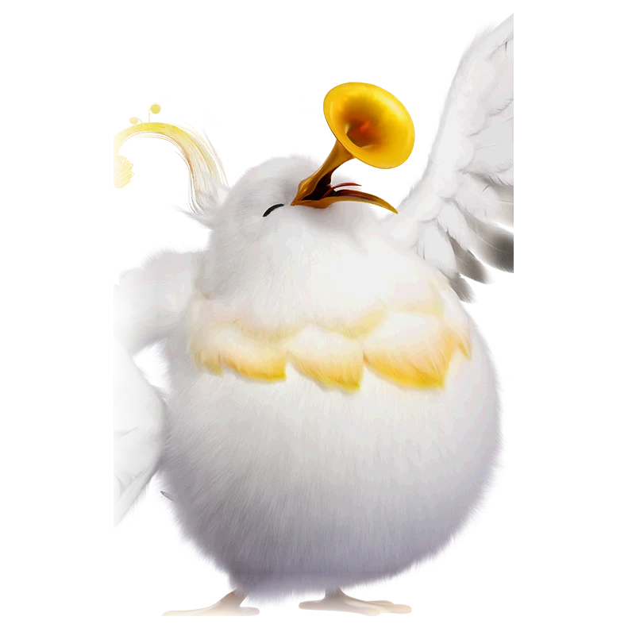

รายชื่อ Aniimo › #010

จิ๊บแตรใหญ่ (Tubster)
#010ธาตุลมNovaBreakTier A
สร้างเสียงทุ้มลึกคล้ายเสียงทูบา ซึ่งเข้ากับลักษณะที่นุ่มนวลและเป็นมิตร
ดูรายละเอียดเต็ม ร่างพิเศษ และร่างเปล่งประกายค่าสถานะพื้นฐาน
| HP | 108 |
|---|---|
| ATK | 80 |
| P.DEF | 66 |
| M.DEF | 109 |
| REGEN | 80 |
| BREAK | 107 |
สกิล
| โจมตีปกติ | ATK ลม (ทำลาย) ใช้พลังลมโจมตีเป้าหมายจากระยะไกล |
| สกิล 1 | Tornado ลม ปล่อยพายุหมุนอากาศในตำแหน่งเป้าหมาย สร้างดสเมจและดูดศัตรูเข้าสู่ศูนย์กลาง |
| สกิล 2 | Resting Whirlwind ลม สะบัดปีกยิงพายุหมุนโค้ง 2 ลูก ดึงเป้าหมายให้เคลื่อนที่ไปตามเส้นทาง เมื่อพายุหมุนทั้งสองมาบรรจบกันจะระเบิด สร้างดาเมจเป็นวงกว้าง |
| สกิล 3 | Gale Guard ลม เข้าสู่ท่าตั้งรับและได้รับลดดาเมจ 20% เมื่อท่าตั้งรับสิ้นสุด จะได้รับโล่เท่ากับ 10% ของ HP สูงสุด เป็นเวลา 20 วินาที กดสกิลอีกครั้งเพื่อยุติก่อนเวลาได้ ระหว่างอยู่ในท่าตั้งรับ ทุกครั้งที่ได้รับการโจมตีจะเพิ่มโล่ที่ได้รับขึ้น 10% สูงสุด 100% |
| อัลติเมต | Truce ลม สร้างขอบเขตพื้นที่ให้พันธมิตรที่อยู่ภายในระยะได้รับบัฟการลดดาเมจอย่างต่อเนื่อง 35% เป็นเวลา 7 วินาที |
สายวิวัฒนาการ
- จิ๊บจิ๊บ → จิ๊บแตรใหญ่ (แอนีโมเลเวล 18, ศักยภาพทำลายจากที่ได้รับเท่ากับ 6 หรือมากกว่า, เอาชนะจิ๊บแตรใหญ่อัลฟา)
จุดเกิด
- The Argent Strait Lv. 28–32
Held Item ที่แนะนำ
- Gargantuan Horn แอนีโมที่ติดตั้งจะได้รับค่าทำลายเพิ่ม 0.7 หน่วยต่อเลเวล
งานใน Homeland
งานธาตุลม Lv.3